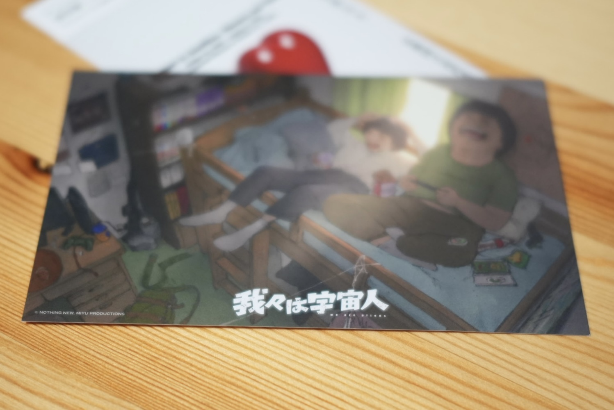

忘れるための手続き(それと映画と)

2026/11/03
思い出を記録する態度について考えることがある。
というのも僕は思い出としての撮影をしたくない派なので、なんで撮ってんのと思う
(カメラマンのくせに。てかなんだこの語り口調)
それは思い出の撮り方が分からないだけかもしれないけど、ひとまず思い出を忘れたくないから撮らないということを言ってみたいのでそうします。
※ブラウザバック推奨箇所1(←2もあるってこと？！)
いや忘れたくないなら撮れよと思うのが正常だと思いはするのですが、
逆に聞きたいのが、撮れば覚えてるんだろうかということです。
確かに撮ったモノを飾るなりなんなり眼に入るようにすればその出来事を忘れることはないと思うし、これには同意ではある
ただもし、そのモノが無かった場合にその思い出のことを覚えてない可能性があると思うと僕は恐ろしく感じるだけです。
それにそもそも覚えているとは何を指しているのかみたいな話もあるはずで、
その出来事があったという事実だけを確認するのであればそれを見れば防げるけど、あの日の会話のちょっとした間合い、ふとした表情、帰り道に思ったこと、みたいな周辺の記憶は残っているかは違うんじゃないかなぁと思う。
(それを見ることをトリガーに思い出せるのではと言われたらそう。ただ存在とその内容を覚えていることは別だということです。割と大事なことをカッコ書きで書くなよ自分さん)
ぐだぐだと書いたけど言いたいことはつまりこうです、
写真に限らずメディアは何かを残す/後ろに伝えることはできる、
それと同時にメディアである以上は切り取りが発生する。
それでもなおメディアに思い出の維持を託すのか、と言われると僕はNoであるだけです。
それと、言っていいならこの態度を美化したいという気持ちがある、しなんならこれ発進で書いていると言っても過言ではない。
(言っていいならってなんだよ。言うなよ、いや言えよ。)
ほい。
という感じで、そもそも覚えられない思い出は忘れるべきものだという思想をそれなりに言ってみました。
ちなみに今から「我々は宇宙人」という映画を見ます
というのもストーリーの中で忘れることに関する描写があるとのことで、
というのも、で言い始めたけどあんまり関係ないや笑
はい、というので忘れることと写真とで思ったことを書いてみた次第でした
悪いまとめ癖で言ってしまうけど、個人的には全ての行為が忘れるための手続きなんじゃないかなぁとか思ったりなんだったり
辛いことを乗り越えるために、楽しかったことにいつまでも囚われないために。そんな風に人は行動するんじゃないかとか考えても詩的に思えていいなぁとか。
(そう考えると写真やメモで外部記憶媒体に委ねる行為に納得できるし、盛者必衰的に考えればそりゃぁ忘れらるもんだよなぁとか)
はい、ということなので自分ももっと流動的に忘れる、忘れられる１つであることを受け入れたいなと思いました
では映画見てきます
おもろいね、この映画のビフォアフで書くの
以下は多分映画の感想になってます知らんけど。
というところで早速映画の話をさせて下さい
あ、今見終わりましたって言おうとしたけどテキストだけだと分かんないね
まぁそんな感じで読者置いてけぼりで行きますが、内容をどうこう説明するつもりはなく見てねとしか言えないです
ほんなら何の話すんねんって言われると、、タイトルですね！！！
我々は宇宙人
まず皆んなが言うようにこの文には色んな解釈の余地があるとは思う
映画を見ていない人でも少なくともこれくらいは思いつくのではないかしら。
我々は宇宙人の意味
・違う言語、振る舞いをする存在としての我々って宇宙人だよねという意味
・そもそも私たちは宇宙人であって真には分かり合えないものという意味
ここら辺かなぁとは思うけど、ただ個人的には上記の在り方としての宇宙人ではなく視点的な意味の宇宙人という意味を感じました
それは、人は人であるにも関わらず自分視点の観測でしか考えられていなく、それは人が自身を宇宙人的な上位の存在である前提から逃れられていないということ。
この視点という意味での我々は宇宙から見ている感覚になってしまっている、つまり我々は宇宙人である(本当は違うのに)ということなのではないかと思ったんですよね。
私たちが見えていることはほんの一部の一断面でしかないことを考慮できていないのではないかと。
(関係ない話をぶっ込むが考慮不足という言葉は好きです)
やべ、関係ない話しすぎて何の話だっけ。
そうそう、忘れるとか忘れないとかの話をしてたけどその割には映画ではそこが軸でもない気がしてて、いやもちろんストーリーを真っ直ぐ理解するならそれなんだけど、。
それを描くなら他のストーリーでも成り立つと思ってしまった。それ以上にタイトルのメッセージを考えてしまったということです。
(ストーリーにケチがあるのではない。この表現が選ばれているのだから私はこう受け取ったよという意味での。)
まぁ色んな持ち帰り方があると思うが自分の過去を踏まえるとこう持つのがいいかなと思った次第です。
ぜひ見て下さいとは全員には言わないけど、考えすぎちゃう人とかにな見て欲しいかも。11月中はまだやってそうだしね。
では総括？させてください
まず忘れることも忘れないこともどちらも悪事を招きかねないことはそう。
ただ少なくとも人間に全てを記憶する機能は無いし、あったとしてもそれは忘れる機能を失ったような感覚になる気がする。
そして覚えておくべきなのは(rememberではなくdon't forgetの意味で)自分が観測したことだけを絶対と思わないことなぁとか思った日でした
こんな感じです
あれだね、読んでもらえたら嬉しいっちゃ嬉しい反面で何か書かなきゃ！ってなるしこれはダメだわとかハードル上がるや〜んと思いました(実際に3記事くらい没にした涙)
まぁ無理に書くことでもないけど。
個人的な流れとしては最近はちょ〜っと1人の時間を増やしたいというか、戻したいというか、なんだかこのままだとつまらないヤツになっちゃいそうな気がしてて怖さを感じている毎日です。
以上
この話も忘れてもらえたら幸いです
(そう言われると逆に覚えちゃうんだけどね〜)